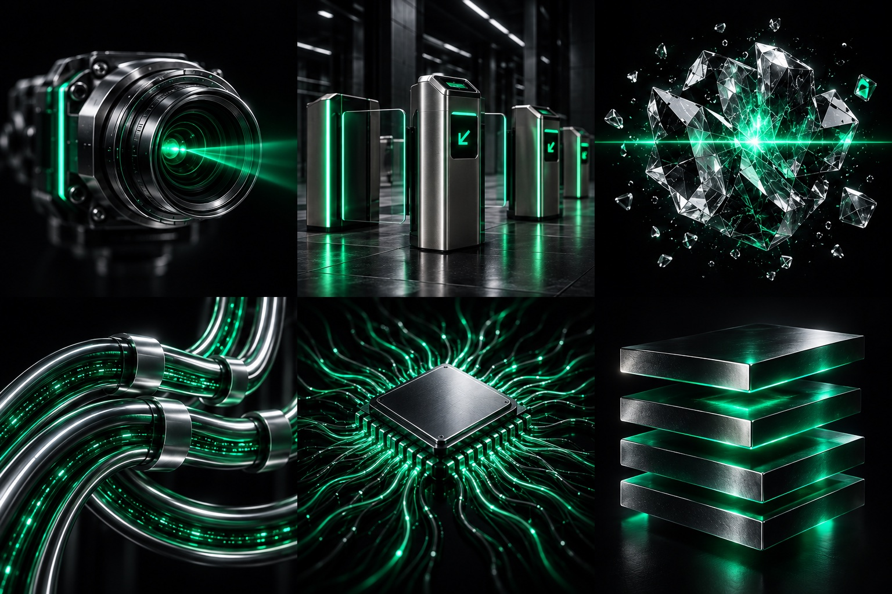

Work / AI Vision · YOLO26 · Multi-head
YOLO26 Multimodal
Multi-modal visual detection system based on YOLO26, featuring reusable Backbone and Neck architecture with three independent detection heads, outputting object detection, keypoint localization, and instance segmentation in a single forward pass.
- Independent Developer
- 3 months
- YOLO26 / PyTorch
- No. 10

One Model, Triple Perception
In real-world visual detection scenarios, we often need to simultaneously obtain an object's location (bounding box), shape (keypoints), and contour (segmentation mask). Traditional approaches typically require training a separate model for each task, then combining outputs via multi-model cascading or ensembling — adding system complexity and non-trivial inference latency.
The core idea of YOLO26 Multimodal is: leverage YOLO26's reusable Backbone and Neck to extract unified multi-scale features, then design three independent Detection Head, Keypoint Head, and Segmentation Head, each with its own loss function and output format. The entire system outputs all three result types in a single forward pass, achieving "one computation, triple perception."
Multi-Head Architecture
The architecture follows YOLO's One-Stage design philosophy with key innovations at the Head layer. While traditional YOLO Heads handle only single detection tasks (bounding box + class), we split the Head into three functionally independent branches, each with its own output channels, activation functions, and loss computation logic.
The key advantage is feature reuse — Backbone and Neck features are shared across three Heads, avoiding redundant computation. Each Head can be independently trained and fine-tuned without interference. When only one output type is needed, other Heads can be individually disabled for flexible capability trimming.
A Reusable Feature Extraction Backbone
YOLO26's Backbone is based on CSP (Cross Stage Partial) architecture, using CBS (Conv + BN + SiLU) modules as building blocks, with C2f modules for cross-stage feature fusion. The Neck uses PAN-FPN (Path Aggregation Network + Feature Pyramid Network) for bidirectional top-down and bottom-up feature aggregation.
Key design: We added a Channel Split mechanism at the Neck output, splitting the fused feature map along the channel dimension into three groups for the Detection, Keypoint, and Segmentation Heads. This lightweight separation is more efficient than feature map copying, adding only 0.3% parameters while effectively reducing gradient conflicts between tasks.
Three-Head Design Details
Multi-Task Loss Design
Each Head has its own loss function, with the total loss as a weighted sum:
L_total = λ₁ · L_det + λ₂ · L_kpt + λ₃ · L_seg
Where L_det includes CIoU localization loss, classification BCE loss, and objectness BCE loss; L_kpt uses keypoint heatmap MSE loss plus visibility classification loss; L_seg combines Dice Loss + BCE Loss for better foreground/background imbalance robustness.
Weight coefficients were determined through experimental tuning: λ₁=1.0, λ₂=0.5, λ₃=0.8. We also introduced dynamic weight adjustment — increasing L_det weight early in training for localization learning, then gradually raising L_kpt and L_seg weights for refined shape output.
Training Strategy
For the dataset, we collected and annotated approximately 12,000 images with multi-task labels, each containing bounding boxes, keypoint coordinates, and segmentation masks. Data augmentation uses Mosaic + MixUp + Random HSV + horizontal flip, with special geometric transforms for keypoints to ensure synchronized coordinate transformation.
Training uses AdamW optimizer with initial learning rate 1e-3 and cosine annealing schedule. Batch size is 32 (4×8 GPU) over 300 epochs. The first 50 epochs use Warmup + frozen Backbone, training only the Neck and three Heads to accelerate convergence and avoid early gradient oscillation.
Core Inference Code
Multi-head inference forward pass flow
import torch
from yolo26 import YOLO26MultiHead
# Initialize multi-head model
model = YOLO26MultiHead(
backbone='cspdarknet26',
neck='pan_fpn',
heads={'det': 80, 'kpt': 17, 'seg': 32},
channel_split=True
)
model.load_state_dict(torch.load('yolo26_multi_best.pt'))
model.eval()
# Single forward pass → triple output
with torch.no_grad():
det_out, kpt_out, seg_out = model(image)
# Detection: boxes + classes
boxes = det_out.boxes.xyxy # [N, 4]
scores = det_out.scores # [N, num_classes]
# Keypoints: [N, K, 3] (x, y, visibility)
keypoints = kpt_out.points
# Segmentation: [N, H, W] binary masks
masks = seg_out.masks
print(f"Det: {len(boxes)} | Kpt: {keypoints.shape[1]} pts | Mask: {masks.shape}")
Experimental Results
- 48.2
- 72.6
- 38.5
- 18ms
Compared to the three-model cascading approach, the multi-head architecture achieves only 0.8 mAP drop in detection while improving inference speed by 2.3× (18ms vs 42ms) and reducing parameters by 37%. This validates the effectiveness of feature sharing + channel separation — in multi-task learning, shared feature extractors not only reduce computation but also improve generalization through inter-task regularization.